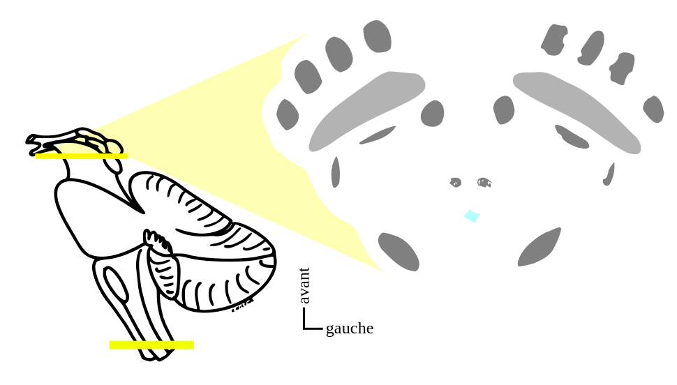

Où est situé:
Noyau rouge



Ces fiches sont susceptibles d'être mises à jour. Surveillez la date
de publication d'une nouvelle version sur la page de description des paquets
pour être tenu au courant. (connexion internet nécessaire)
Pour procéder à une mise à jour, il suffit de
télécharger le paquet à nouveau et de l'importer dans anki.

Il est possible de contribuer au projet avec vos propres fiches, que vous sachiez ou non utiliser Anki. Contactez-nous pour en discuter!
contact: ankibrest@gmail.com